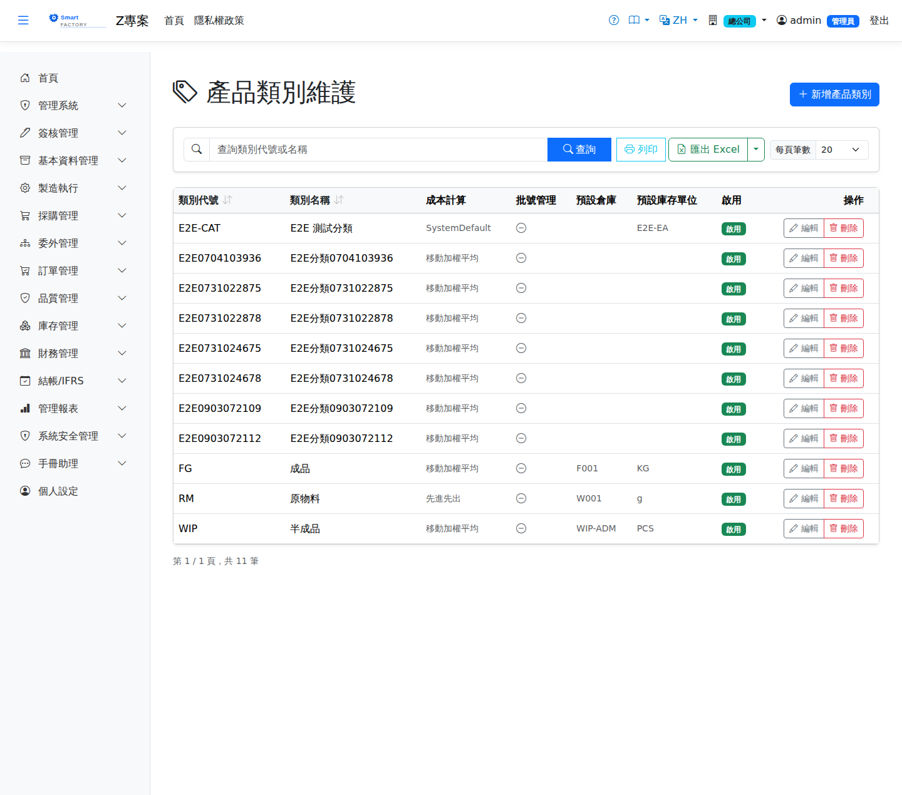

產品類別Product Category
產品類別用於將產品分組管理，並可為每個類別設定預設倉庫、儲位與計量單位。新增產品時選擇類別，系統會自動帶入庫存計量單位與批號追蹤兩項，減少逐筆設定的工作量。預設倉庫與預設儲位則不同——產品主檔上沒有這兩個欄位，它們不會被帶入產品，而是在單據作業當下被系統直接引用（見下方說明），因此它們不是輸入便利設定，而是幾條作業流程的必要前置。Product categories group products for management and can carry a default warehouse, location and unit of measure. Choosing a category when creating a product fills in two of them — the stock unit of measure and lot tracking — saving repetitive setup. The default warehouse and location are different: the product master has no such fields, so they are never copied onto a product. They are read by the system at the moment a document is processed (see below), which makes them a prerequisite for several flows rather than a data-entry convenience.

欄位說明Field reference
| 欄位名稱Field | 必填Required | 說明Guide |
|---|---|---|
| 類別代碼Category Code | 必填Required | 唯一識別碼（例：RAW、WIP、FG）Unique code (e.g. RAW, WIP, FG) |
| 類別名稱Category Name | 必填Required | 完整名稱（例：原物料、在製品、成品）Full name (e.g. raw material, WIP, finished goods) |
| 啟用批號追蹤Enable Lot Tracking | 勾選後，該類別的產品預設啟用批號管理Once checked, products in this category enable lot tracking by default | |
| 預設倉庫Default Warehouse | 不會帶入產品主檔。單據沒有指定倉庫時，系統改用此欄位——見下方「這兩個預設值實際被誰用到」Not copied onto the product master. The system falls back to this field when a document does not name a warehouse — see "Who actually uses these two defaults" below | |
| 預設儲位Default Location | 不會帶入產品主檔（須先選擇倉庫）。儲位才是出庫驗證的實際單位，只設倉庫不設儲位等同沒設Not copied onto the product master (pick a warehouse first). The location is the unit the issue check actually works on, so setting a warehouse without a location counts as not set at all | |
| 預設庫存計量單位Default Stock UOM | 新增產品時自動帶入的庫存計量單位Stock UOM filled in automatically when a product is created | |
| 備註Notes | 類別補充說明Category notes | |
| 是否啟用Active | 停用後不可建立新產品時選取此類別Once inactive, this category cannot be chosen when creating products |
操作步驟Steps
這兩個預設值實際被誰用到Who actually uses these two defaults
預設倉庫與預設儲位是作業當下的退路：以下情境的單據若沒有指定倉儲，系統就取該料件所屬類別的這兩個值；取不到就中止或退回其他來源。The default warehouse and location act as a fallback at processing time: in the situations below, if the document does not name a warehouse or location the system reads these two values from the item's category; when it cannot, the action either stops or falls back elsewhere.
| 情境Situation | 沒設會怎樣What happens if it is not set |
|---|---|
| 出貨單、銷貨退回Goods shipment, sales return | 這兩張單沒有倉庫與儲位欄位，一律走此退路。沒設就在確認當下被擋（「未指定儲位，且產品類別無預設儲位」）——單倉部署也會踩到Neither document has a warehouse or location field, so this fallback is always used. If it is not set the document is rejected at confirmation ("no location given and the product category has no default") — this happens even on a single-warehouse deployment |
| 倒扣（Backflush）用料Backflushed material | 倒扣不經備料單，來源倉儲無欄位可填，只能取此值；取不到就退回完工入庫的倉儲。分倉時會讓整張工單無法入庫，詳見完工入庫Backflush has no staging order and no field for a source, so only this value is available; failing that it falls back to the completion receipt's own warehouse. With split warehouses the whole work order then cannot be received — see Production Putaway |
| 進貨單、採購退貨Goods receipt, purchase return | 簡化模式下未指定倉儲時取此值Used in simplified mode when the document does not name a warehouse or location |
| 委外收貨（非簡化模式）Outsource receipt (not simplified) | 手機收料不問倉儲：收回品品檢合格後就放行到此倉儲。要品檢的品號沒設，收貨確認會被擋下並寫出品號（原本會照收，品檢合格後卻留在待驗倉）Phone receiving does not ask for a warehouse: returned goods go here once they pass inspection. If a product that needs inspection has none, confirming the receipt is blocked with the product named (previously it was accepted, and passed goods then stayed in quarantine) |
| 委外送外料自動扣、委外收料當場驗收Auto-deducting send-out material, inspection at receipt | 送外料從此倉儲扣；當場驗收合格的收回品入此倉儲。沒設就擋下並寫出品號Send-out material is deducted from here; goods that pass inspection at receipt are stocked here. If unset, the receipt is blocked with the product named |